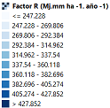
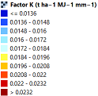
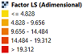
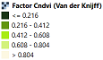
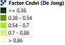

<!doctype html>
<html lang="en">
    <head>
        <meta charset="utf-8">
        <meta http-equiv="X-UA-Compatible" content="IE=edge">
        <meta name="viewport" content="initial-scale=1,user-scalable=no,maximum-scale=1,width=device-width">
        <meta name="mobile-web-app-capable" content="yes">
        <meta name="apple-mobile-web-app-capable" content="yes">
        <link rel="stylesheet" href="css/leaflet.css">
        <link rel="stylesheet" href="css/qgis2web.css"><link rel="stylesheet" href="css/fontawesome-all.min.css">
        <link rel="stylesheet" href="css/leaflet-measure.css">
        <style>
        html, body, #map {
            width: 100%;
            height: 100%;
            padding: 0;
            margin: 0;
        }
        </style>
        <title>San Bartolo-Factores USLE</title>
    </head>
    <body>
        <div id="map">
        </div>
        <script src="js/qgis2web_expressions.js"></script>
        <script src="js/leaflet.js"></script>
        <script src="js/leaflet-svg-shape-markers.min.js"></script>
        <script src="js/leaflet.rotatedMarker.js"></script>
        <script src="js/leaflet.pattern.js"></script>
        <script src="js/leaflet-hash.js"></script>
        <script src="js/Autolinker.min.js"></script>
        <script src="js/rbush.min.js"></script>
        <script src="js/labelgun.min.js"></script>
        <script src="js/labels.js"></script>
        <script src="js/leaflet-measure.js"></script>
        <script src="data/Estaciones_climatologicas2_7.js"></script>
        <script src="data/SubcuencaSanBartolo_8.js"></script>
        <script>
        var highlightLayer;
        function highlightFeature(e) {
            highlightLayer = e.target;
            highlightLayer.openPopup();
        }
        var map = L.map('map', {
            zoomControl:true, maxZoom:28, minZoom:1
        }).fitBounds([[23.616603733583673,-109.99199389474686],[23.830373650848802,-109.69079925815886]]);
        var hash = new L.Hash(map);
        map.attributionControl.setPrefix('<a href="https://github.com/tomchadwin/qgis2web" target="_blank">qgis2web</a> &middot; <a href="https://leafletjs.com" title="A JS library for interactive maps">Leaflet</a> &middot; <a href="https://qgis.org">QGIS</a>');
        var autolinker = new Autolinker({truncate: {length: 30, location: 'smart'}});
        var measureControl = new L.Control.Measure({
            position: 'topleft',
            primaryLengthUnit: 'meters',
            secondaryLengthUnit: 'kilometers',
            primaryAreaUnit: 'sqmeters',
            secondaryAreaUnit: 'hectares'
        });

        L.control.scale({
            metric:true,
            imperial:false,
        }).addTo(map);

        L.Control.Watermark=L.Control.extend({
            onAdd:function(map){
                var img = L.DomUtil.create('img');
                img.src = 'logo2.png',
                img.style.width = '200px';
                
                return img;
            },
            
            onRemove:function(map){},
        });

        L.control.watermak = function(opts){
            return new L.Control.Watermark(opts);
        }

        L.control.watermak({position:'bottomleft'}).addTo(map)

        measureControl.addTo(map);
        document.getElementsByClassName('leaflet-control-measure-toggle')[0]
        .innerHTML = '';
        document.getElementsByClassName('leaflet-control-measure-toggle')[0]
        .className += ' fas fa-ruler';
        var bounds_group = new L.featureGroup([]);
        function setBounds() {
        }
        map.createPane('pane_GoogleSatellite_0');
        map.getPane('pane_GoogleSatellite_0').style.zIndex = 400;
        var layer_GoogleSatellite_0 = L.tileLayer('http://www.google.cn/maps/vt?lyrs=s@189&gl=cn&x={x}&y={y}&z={z}', {
            pane: 'pane_GoogleSatellite_0',
            opacity: 1.0,
            attribution: '',
            minZoom: 1,
            maxZoom: 28,
            minNativeZoom: 0,
            maxNativeZoom: 18
        });
        
        layer_GoogleSatellite_0;
        map.addLayer(layer_GoogleSatellite_0);
        map.createPane('pane_Positron_1');
        map.getPane('pane_Positron_1').style.zIndex = 401;
        var layer_Positron_1 = L.tileLayer('https://cartodb-basemaps-a.global.ssl.fastly.net/light_all/{z}/{x}/{y}.png', {
            pane: 'pane_Positron_1',
            opacity: 1.0,
            attribution: '',
            minZoom: 1,
            maxZoom: 28,
            minNativeZoom: 0,
            maxNativeZoom: 18
        });

        var title = L.control();
        title.onAdd = function (map) {
            var div = L.DomUtil.create('div', 'info');
            div.innerHTML +=
            '<h2>Factores USLE</h2>Subcuenca San Bartolo, B.C.S, México.';
            return div;
        };
        title.addTo(map);

        layer_Positron_1;
        map.addLayer(layer_Positron_1);
        map.createPane('pane_FactorCndviDeJong_2');
        map.getPane('pane_FactorCndviDeJong_2').style.zIndex = 402;
        var img_FactorCndviDeJong_2 = 'data/FactorCndviDeJong_2.png';
        var img_bounds_FactorCndviDeJong_2 = [[23.661973505639065,-109.96684418099647],[23.794996059536643,-109.6806139159327]];
        var layer_FactorCndviDeJong_2 = new L.imageOverlay(img_FactorCndviDeJong_2,
                                              img_bounds_FactorCndviDeJong_2,
                                              {pane: 'pane_FactorCndviDeJong_2'});
        bounds_group.addLayer(layer_FactorCndviDeJong_2);
        map.addLayer(layer_FactorCndviDeJong_2);
        map.createPane('pane_FactorCndviVanderKnijff_3');
        map.getPane('pane_FactorCndviVanderKnijff_3').style.zIndex = 403;
        var img_FactorCndviVanderKnijff_3 = 'data/FactorCndviVanderKnijff_3.png';
        var img_bounds_FactorCndviVanderKnijff_3 = [[23.661973505639065,-109.96684418099647],[23.794996059536643,-109.6806139159327]];
        var layer_FactorCndviVanderKnijff_3 = new L.imageOverlay(img_FactorCndviVanderKnijff_3,
                                              img_bounds_FactorCndviVanderKnijff_3,
                                              {pane: 'pane_FactorCndviVanderKnijff_3'});
        bounds_group.addLayer(layer_FactorCndviVanderKnijff_3);
        map.addLayer(layer_FactorCndviVanderKnijff_3);
        map.createPane('pane_FactorLSAdimensional_4');
        map.getPane('pane_FactorLSAdimensional_4').style.zIndex = 404;
        var img_FactorLSAdimensional_4 = 'data/FactorLSAdimensional_4.png';
        var img_bounds_FactorLSAdimensional_4 = [[23.66197329716539,-109.96684418099647],[23.794973481910237,-109.68058961013394]];
        var layer_FactorLSAdimensional_4 = new L.imageOverlay(img_FactorLSAdimensional_4,
                                              img_bounds_FactorLSAdimensional_4,
                                              {pane: 'pane_FactorLSAdimensional_4'});
        bounds_group.addLayer(layer_FactorLSAdimensional_4);
        map.addLayer(layer_FactorLSAdimensional_4);
        map.createPane('pane_FactorKtha1MJ1mm1_5');
        map.getPane('pane_FactorKtha1MJ1mm1_5').style.zIndex = 405;
        var img_FactorKtha1MJ1mm1_5 = 'data/FactorKtha1MJ1mm1_5.png';
        var img_bounds_FactorKtha1MJ1mm1_5 = [[23.66197329716539,-109.96684418099647],[23.794973481910237,-109.68058961013394]];
        var layer_FactorKtha1MJ1mm1_5 = new L.imageOverlay(img_FactorKtha1MJ1mm1_5,
                                              img_bounds_FactorKtha1MJ1mm1_5,
                                              {pane: 'pane_FactorKtha1MJ1mm1_5'});
        bounds_group.addLayer(layer_FactorKtha1MJ1mm1_5);
        map.addLayer(layer_FactorKtha1MJ1mm1_5);
        map.createPane('pane_FactorRMjmmha1ao1_6');
        map.getPane('pane_FactorRMjmmha1ao1_6').style.zIndex = 406;
        var img_FactorRMjmmha1ao1_6 = 'data/FactorRMjmmha1ao1_6.png';
        var img_bounds_FactorRMjmmha1ao1_6 = [[23.66197329716539,-109.96684418099647],[23.794973481910237,-109.68058961013394]];
        var layer_FactorRMjmmha1ao1_6 = new L.imageOverlay(img_FactorRMjmmha1ao1_6,
                                              img_bounds_FactorRMjmmha1ao1_6,
                                              {pane: 'pane_FactorRMjmmha1ao1_6'});
        bounds_group.addLayer(layer_FactorRMjmmha1ao1_6);
        map.addLayer(layer_FactorRMjmmha1ao1_6);
        function pop_Estaciones_climatologicas2_7(feature, layer) {
            layer.on({
                mouseout: function(e) {
                    if (typeof layer.closePopup == 'function') {
                        layer.closePopup();
                    } else {
                        layer.eachLayer(function(feature){
                            feature.closePopup()
                        });
                    }
                },
                mouseover: highlightFeature,
            });
            var popupContent = '<table>\
                    <tr>\
                        <td colspan="2"><strong>ID</strong><br />' + (feature.properties['ID'] !== null ? autolinker.link(feature.properties['ID'].toLocaleString()) : '') + '</td>\
                    </tr>\
                    <tr>\
                        <td colspan="2"><strong>CLAVE</strong><br />' + (feature.properties['CLAVE'] !== null ? autolinker.link(feature.properties['CLAVE'].toLocaleString()) : '') + '</td>\
                    </tr>\
                    <tr>\
                        <th scope="row">Prec. Anual (mm)</th>\
                        <td>' + (feature.properties['Prec. Anual (mm)'] !== null ? autolinker.link(feature.properties['Prec. Anual (mm)'].toLocaleString()) : '') + '</td>\
                    </tr>\
                </table>';
            layer.bindPopup(popupContent, {maxHeight: 400});
        }

        function style_Estaciones_climatologicas2_7_0() {
            return {
                pane: 'pane_Estaciones_climatologicas2_7',
                shape: 'triangle',
                radius: 5.6,
                opacity: 1,
                color: 'rgba(255,255,255,1.0)',
                dashArray: '',
                lineCap: 'butt',
                lineJoin: 'miter',
                weight: 2.0,
                fill: true,
                fillOpacity: 1,
                fillColor: 'rgba(255,13,1,1.0)',
                interactive: true,
            }
        }
        map.createPane('pane_Estaciones_climatologicas2_7');
        map.getPane('pane_Estaciones_climatologicas2_7').style.zIndex = 407;
        map.getPane('pane_Estaciones_climatologicas2_7').style['mix-blend-mode'] = 'normal';
        var layer_Estaciones_climatologicas2_7 = new L.geoJson(json_Estaciones_climatologicas2_7, {
            attribution: '',
            interactive: true,
            dataVar: 'json_Estaciones_climatologicas2_7',
            layerName: 'layer_Estaciones_climatologicas2_7',
            pane: 'pane_Estaciones_climatologicas2_7',
            onEachFeature: pop_Estaciones_climatologicas2_7,
            pointToLayer: function (feature, latlng) {
                var context = {
                    feature: feature,
                    variables: {}
                };
                return L.shapeMarker(latlng, style_Estaciones_climatologicas2_7_0(feature));
            },
        });
        bounds_group.addLayer(layer_Estaciones_climatologicas2_7);
        map.addLayer(layer_Estaciones_climatologicas2_7);
        function pop_SubcuencaSanBartolo_8(feature, layer) {
            layer.on({
                mouseout: function(e) {
                    if (typeof layer.closePopup == 'function') {
                        layer.closePopup();
                    } else {
                        layer.eachLayer(function(feature){
                            feature.closePopup()
                        });
                    }
                },
                mouseover: highlightFeature,
            });
            var popupContent = '<table>\
                    <tr>\
                        <td colspan="2">' + (feature.properties['fid'] !== null ? autolinker.link(feature.properties['fid'].toLocaleString()) : '') + '</td>\
                    </tr>\
                    <tr>\
                        <td colspan="2">' + (feature.properties['Id'] !== null ? autolinker.link(feature.properties['Id'].toLocaleString()) : '') + '</td>\
                    </tr>\
                    <tr>\
                        <td colspan="2">' + (feature.properties['Area_Ha'] !== null ? autolinker.link(feature.properties['Area_Ha'].toLocaleString()) : '') + '</td>\
                    </tr>\
                    <tr>\
                        <td colspan="2">' + (feature.properties['AREA_KM2'] !== null ? autolinker.link(feature.properties['AREA_KM2'].toLocaleString()) : '') + '</td>\
                    </tr>\
                    <tr>\
                        <td colspan="2">' + (feature.properties['PMETRO_KM'] !== null ? autolinker.link(feature.properties['PMETRO_KM'].toLocaleString()) : '') + '</td>\
                    </tr>\
                    <tr>\
                        <td colspan="2">' + (feature.properties['CENTROID_X'] !== null ? autolinker.link(feature.properties['CENTROID_X'].toLocaleString()) : '') + '</td>\
                    </tr>\
                    <tr>\
                        <td colspan="2">' + (feature.properties['CENTROID_Y'] !== null ? autolinker.link(feature.properties['CENTROID_Y'].toLocaleString()) : '') + '</td>\
                    </tr>\
                    <tr>\
                        <td colspan="2">' + (feature.properties['U_mean'] !== null ? autolinker.link(feature.properties['U_mean'].toLocaleString()) : '') + '</td>\
                    </tr>\
                    <tr>\
                        <td colspan="2">' + (feature.properties['U_stdev'] !== null ? autolinker.link(feature.properties['U_stdev'].toLocaleString()) : '') + '</td>\
                    </tr>\
                    <tr>\
                        <td colspan="2">' + (feature.properties['U_min'] !== null ? autolinker.link(feature.properties['U_min'].toLocaleString()) : '') + '</td>\
                    </tr>\
                    <tr>\
                        <td colspan="2">' + (feature.properties['U_max'] !== null ? autolinker.link(feature.properties['U_max'].toLocaleString()) : '') + '</td>\
                    </tr>\
                    <tr>\
                        <td colspan="2">' + (feature.properties['U_variance'] !== null ? autolinker.link(feature.properties['U_variance'].toLocaleString()) : '') + '</td>\
                    </tr>\
                    <tr>\
                        <td colspan="2">' + (feature.properties['DD_mean'] !== null ? autolinker.link(feature.properties['DD_mean'].toLocaleString()) : '') + '</td>\
                    </tr>\
                    <tr>\
                        <td colspan="2">' + (feature.properties['DD_min'] !== null ? autolinker.link(feature.properties['DD_min'].toLocaleString()) : '') + '</td>\
                    </tr>\
                    <tr>\
                        <td colspan="2">' + (feature.properties['DD_max'] !== null ? autolinker.link(feature.properties['DD_max'].toLocaleString()) : '') + '</td>\
                    </tr>\
                </table>';
            layer.bindPopup(popupContent, {maxHeight: 400});
        }

        function style_SubcuencaSanBartolo_8_0() {
            return {
                pane: 'pane_SubcuencaSanBartolo_8',
                opacity: 1,
                color: 'rgba(35,35,35,1.0)',
                dashArray: '',
                lineCap: 'butt',
                lineJoin: 'miter',
                weight: 2.0, 
                fillOpacity: 0,
                interactive: false,
            }
        }
        map.createPane('pane_SubcuencaSanBartolo_8');
        map.getPane('pane_SubcuencaSanBartolo_8').style.zIndex = 408;
        map.getPane('pane_SubcuencaSanBartolo_8').style['mix-blend-mode'] = 'normal';
        var layer_SubcuencaSanBartolo_8 = new L.geoJson(json_SubcuencaSanBartolo_8, {
            attribution: '',
            interactive: false,
            dataVar: 'json_SubcuencaSanBartolo_8',
            layerName: 'layer_SubcuencaSanBartolo_8',
            pane: 'pane_SubcuencaSanBartolo_8',
            onEachFeature: pop_SubcuencaSanBartolo_8,
            style: style_SubcuencaSanBartolo_8_0,
        });
        bounds_group.addLayer(layer_SubcuencaSanBartolo_8);
        map.addLayer(layer_SubcuencaSanBartolo_8);
        var baseMaps = {};
        L.control.layers(baseMaps,{' Subcuenca San Bartolo': layer_SubcuencaSanBartolo_8,' Estaciones_climatologicas': layer_Estaciones_climatologicas2_7,'': layer_FactorRMjmmha1ao1_6,'': layer_FactorKtha1MJ1mm1_5,'': layer_FactorLSAdimensional_4,'': layer_FactorCndviVanderKnijff_3,'': layer_FactorCndviDeJong_2,"Positron": layer_Positron_1,"Google Satellite": layer_GoogleSatellite_0,}).addTo(map);
        setBounds();
        L.ImageOverlay.include({
            getBounds: function () {
                return this._bounds;
            }
        });
        </script>
    </body>
</html>
